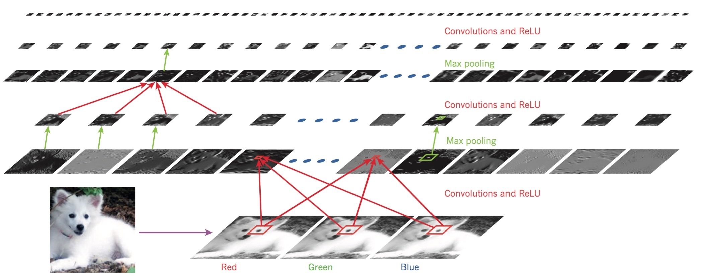
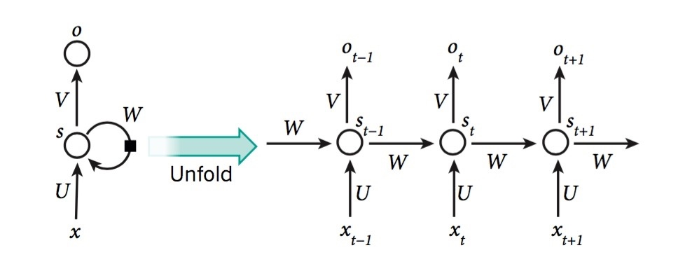
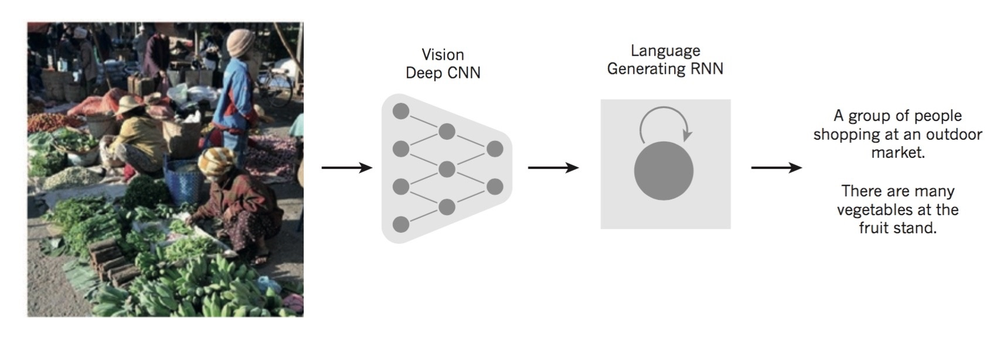

如今，机器学习的技术在我们的生活中扮演着越来越重要的角色。从搜索引擎到推荐系统，从图像识别到语音识别。而这些应用都开始逐渐使用一类叫做深度学习（Deep Learning）的技术。
传统机器学习算法的局限性在于，它们往往很难处理那些未被加工过的自然数据（natural data），例如一张原始的RGB图像。因此，构建一个传统的机器学习系统，往往需要一些有经验的工程师设计一个特征提取器，将原始数据转化成机器能识别的feature representation。
有一类叫做representation learning的算法可以实现让机器自发地从输入的原始数据中发现那些有用的feature。Deep Learning正是这样的一类算法。
下面是Lecun等人给出的Deep Learning的正式定义：
Deep-learning methods are representation-learning methods with multiple levels of representation, obtained by composing simple but non-linear modules that each transform the representation at one level (starting with the raw input) into a representation at a higher, slightly more abstract level.
从这段话中可以看出，Deep Learning有三个核心的要素：
- a kind of representation learning methods
深度学习的精髓在于，各个layer上的特征不是由人类工程师设计的，而是通过一类general-purpose的learning procedure从数据中主动地习得。 - with multiple levels of representation from raw to abstract
以图片为例，原始数据只是一些毫无意义的像素点构成的矩阵。而深度学习学习到的第一层特征能够检测图片中是否存在指向某个方向的线条；更高层的特征则通过组合低层级的特征，在更抽象的水平上——例如特定的花纹——进行检测。 - non-linear transformation of representation
理论上，通过组合足够数量的非线性变换，可以对任意函数进行拟合。
可见，Deep Learning非常擅长于挖掘高维数据中的内在结构，也因此在很多领域上取得了令人惊异的成果。
有监督学习
Supervised learning，有监督学习，是机器学习一种常见的形式。它的任务是训练一个模型，使其能在给定的输入下，输出预期的value。为此，我们需要一个error function来计算输出值与期望值的误差，并通过调节模型内部的参数来减小这个误差。梯度下降（Gradient Descent）和随机梯度下降（SGD）是两种常见的参数调节的算法。
目前，针对有监督学习问题，大部分机器学习系统都是在人工挑选的feature上运行一个线性分类器。然而，线性分类器的缺陷在于，它只能将输入空间划分为一些简单的region，因此在诸如图像识别和语言识别的问题上往往无能为力（这些问题需要模型对一些特定特征的微小变化极其敏感，而对不相关特征的变化极不敏感）。例如，在像素层面上，同一只Samoyed在不同背景下的两张图片的差别很大，而相同背景下的Samoyed和Wolf的图片差异却很小。这对于传统的线性分类器，或是任一个浅层（Shallow）分类器，想在区分后一组图片中的Samoyed和Wolf的同时，把前一组图片中的Samoyed放在同一个类别下，几乎是一个impossible mission。这也被称之为selectivity–invariance dilemma：我们需要一组特征，它们能够选择性地响应图片中的重要部分，而对图片中不重要部分的变化保持不变性。
这一问题传统的解决方案是人工设计一些特征提取器。然而，借助Deep Learning，我们有希望从数据中自发地学习到这些特征。
反向传播算法
我们可以用随机梯度下降算法（SGD）来训练一个multilayer networks的模型。这一算法也被称之为反向传播算法（Backpropagation）。该算法的背后不过是微积分第一堂课里就学到的链式求导法则。我们将误差函数对layer中一个模块的输入的偏导，表示成该误差函数对下一层layer的输入的偏导的函数，并在此基础上求出模型参数的梯度。
前向反馈神经网络（feedforwrad neural network）正是这样一个multilayer network。许多深度学习的模型都采用了与之类似的网络结构。在前向传播的过程中，每一层神经元都对上一层神经元的输出进行加权求和，并通过一个非线性的变换传递给下一层神经元。目前在深度学习网络中被广泛使用的非线性变换是ReLU（rectified linear unit）：\(f(z)=max(z,0)\)。与传统的平滑非线性变换（\(tanh(z)\)或logistic函数）相比，ReLU的学习速度更快。通过每一个隐藏层上对输入空间的非线性变换，我们最终得到了一个线性可分的特征空间。
然而，在上个世纪90年代末期，神经网络的发展遇到了极大的阻碍。人们认为，梯度下降算法会使得模型很容易陷入一些远离真实值的局部最优解。事实上，近期的一些研究表明，这些最优解大都是分布在误差空间上的鞍点；它们有着相近的误差函数值。因此，我们并不需要关心算法最终落到了哪个最优解上。
深度神经网络的复兴发生在2006年。CIFAR的一批研究者提出了一种逐层训练的无监督学习算法；每一个隐藏层上的神经元都试图去重构上一层神经元习得的特征，从而学习到更高级的特征表达。最终，通过一个输出层的反向传播过程来对模型的参数进行微调，得到一个有监督的学习模型。
卷积神经网络
与全连接的前向反馈神经网络相比，卷积神经网络（Convolutional Neural Networks）更加易于训练。事实上，当整个神经网络的研究都处于低谷的时候，CNN却独树一帜，在解决许多实际的问题中都有着不俗的表现。最近几年，CNN更在计算机视觉（CV）领域中得到广泛的应用。
CNN一般被用于处理multiple arrays形式的数据输入。例如一段文本（1D array）；一张图像（2D array）；或是一段视频（3D array）。CNN之所以能够有效的处理这些原生态的数据，离不开它的四个核心要素：
1. 局部连接（local connections）
2. 共享权重（shared weights）
3. 池化（pooling）
4. 多层网络结构（multiple layers）
下图是一个卷积神经网络的典型结构，主要由两种类型的layer构成：卷积层（convolutional layer）和池化层（pooling layer）。

卷积层由多个feature maps构成（类似原始输入数据里的通道），每一个feature maps里的神经元都通过一组权重（filter bank）与前一层所有feature maps里的部分神经元相连（local connection），并对前一层相连神经元的输出加权求和，传递给一个非线性的变换器（通常是ReLU）。值得注意的是，同一个feature map里的神经元共享同一个filter bank；不同feature maps之间的filter bank并不相同（shared weights）。这么做出于两点考虑：1. 在列状数据（array data）中，相邻的数据点一般是高度相关的；局域的连接更有利于特征的检测；2. 这种局域的统计特征往往与位置无关，从而使得不同位置的神经元可以通过共享权重检测同一个特征。数学上，一个feature map对输入特征的操作，等效于一个离散的卷积过程。这也是卷积神经网络名字的由来。
卷积层的作用是组合上一层的局域特征并进行检测；而池化层的作用是将检测到的距离相近的特征合并为一，从而降低特征相对位置的变化对最终结果的影响。一种常见的池化操作是maximum pooling，它对一个local patch里的神经元的状态取最大值并输出。池化操作可以有效地降低特征的维度，并增强模型的泛化能力。
将2-3个由卷积层、非线性变换、和池化层构成的stage堆叠在一起，与一个全连接的输出层相连，就组成了一个完整的卷积神经网络。反向传播算法依然可被用来训练这个网络中的连接权重。
同许多深度神经网络一样，卷积神经网络成功地利用了自然信号中内在的层级结构属性：高层级的特征由低层级的特征组成。例如，一张图片中的物体可以拆分成各个组件；每个组件又可以进一步拆分成一些基本的图案；而每个基本的图案又是由更基本的线条组成。
Image Understanding与深度卷积网络
虽然早在2000年，卷积神经网络在图像识别的领域中就已经取得了不错的成绩；然而直到2012年的ImageNet比赛后，CNN才被计算机视觉和机器学习的主流科学家们所接受。CNN的崛起依赖于四个因素：GPU的高性能计算；ReLU的提出；一种叫做dropout的正则化技术；和一种对已有数据进行变形以生成更多的训练样本的技术。一个深度卷积神经网络通常有10-20个卷积层，数亿的权重和连接。得益于计算硬件和并行计算的高速发展，使得深度卷积神经网络的训练成为了可能。如今，深度CNN带来了计算机视觉领域的一场革命，被广泛应用于几乎所有与图像识别有关的任务中（例如无人车的自动驾驶）。最近的一项研究表明，如果将深度CNN学习到的高维特征与RNN结合在一起，甚至可以教会计算机“理解”图片里的内容。
Distributed Representation与自然语言处理
深度学习理论指出，与传统的浅层学习模型相比，深度学习网络有两个指数级的优势：
1. 分布式的特征表达（distributed representation）使得模型的泛化空间成指数倍的增长（即便是训练空间中未出现的样本也可以通过分布式特征组合出来）；
2. 层级结构的特征表达在深度上加速了这种指数倍的增长。
下面以深度神经网络在自然语言处理中的一个应用，来解释distributed representation的概念。
假设我们需要训练一个深度神经网络来预测一段文本序列的下一个单词。我们用一个one-of-N的0-1向量来表示上下文中出现的单词。神经网络将首先通过一个embedding层为每一个输入的0-1向量生成一个word vector，并通过剩下的隐藏层将这些word vector转化为目标单词的word vector。这里的word vector就是一种distributed representation。向量中的每一个元素都对应着原始单词的某一个语义特征。这些特征互不排斥，共同表达了原始文本里的单词。要注意的是，这些语义特征即非显式地存在于原始的输入数据中，也非由专家事先指定，而是通过神经网络从输入输出的结构联系中自动挖掘出来。因此，对于我们的单词预测问题，模型学习到的word vector可以很好地表示两个单词在语义上的相似度（例如，在这个问题下，Tuesday和Wednesday这两个单词给出的word vector相似度就很高）。而传统的统计语言模型就很难做到这一点（它们通常是把单词作为一个不可分的最小单元）。
如今，这种从文本中学习word vector的技术被广泛应用于各种自然语言处理的问题中。
递归神经网络
递归神经网络（Recurrent Neural Network）通常用于处理一些序列的输入（例如语音或文本）。它的基本思想是，一次只处理输入序列中的一个元素，但在hidden units中维护一个状态向量，隐式地编码之前输入的历史信息。如果我们将不同时刻的隐藏单元在空间上展开，就得到了一个（时间）深度网络。显然，我们可以在这个深度网络上运用反向传播算法来训练一个RNN模型。

在RNN模型中，每一个时刻的状态向量\(s_t\)都由上一时刻的状态向量\(s_{t-1}\)和当前时刻的输入\(x_t\)所决定。通过这种递归的方式，RNN将每一时刻的输入\(x_t\)都映射为一个依赖其历史所有输入的输出\(o_t\)。注意，模型中的参数（\(U,V,W\)）是与序列时刻无关的权重。
RNN在自然语言处理上有很多应用。例如，可以训练一个RNN模型，将一段英文“编码”成一个语义向量，再训练另一个RNN模型，将语义向量“解码”成一段法文。这就实现了一个基于深度学习的翻译系统。除此之外，在“编码”阶段，我们还可以用一个深度卷积网络将一张原始的图片转化为高级的语义特征，并在此基础上训练一个RNN“解码器”，就可以实现“看图说话”的功能。

尽管RNN设计的初衷是为了学习长记忆依赖，然而一些理论和实验的研究表明，“it is difficult to learn to store information for very long”。为此，人们提出了long short-term memory(LSTM)模型。LSTM模型通过在RNN模型的基础上引入一些特殊的中间神经元（门变量）来控制长短期记忆的均衡，被证明要比传统的RNN模型更加高效和强大。
还有一类模型是通过引入一个记忆存储单元来增强RNN模型的记忆能力。Neural Turing Machine和memory networks就是这一类模型。它们在处理一些知识问答的推断系统中被证明十分有效。
Deep Learning的未来
无监督学习：可以说，正是对无监督学习的研究才催化了深度学习的复兴。然而，如今无监督学习似乎已被有监督学习的巨大光芒所掩盖。考虑到人和动物大部分是通过无监督的学习来了解这个世界，长期来看，对无监督学习的研究将会愈发的重要。
深度学习与强化学习的结合：在CNN和RNN的基础上，结合Reinforcement Learning让计算机学会进一步的决策。这方面的研究虽尚处于萌芽，但已有一些不俗的表现。例如前段时间的AlphaGo。
自然语言的理解。虽然RNN已被广泛应用于自然语言处理，然而在教会机器理解自然语言的目标上，还有很长的一段路要走。
特征学习和特征推断的结合。这或许会极大地推动人工智能的发展